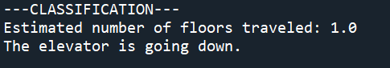
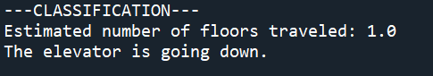

This program reads linear accelerometer data and classifies the motion of the elevator (up/down)
and also the approximate distance travelled (floors).
The elevator motion detector is a physics-inspired classifier program developed in Python.
I worked with a team of 4 (including myself) for the development of this program.
This program reads acceleration data. This type of data (with the help of some calculus)
can be easily manipulated to find out the velocity and position of any moving object, so thats
what we did!
The program also prints out the classification of the motion, whether is moved up or down
and approximately how many floors it travelled.
I never had any reason to stay in an elevator continuously travelling up and down 5 floors
until I had to collect data for this project.. 🙉
#Python #matplotlib #numpy
 
